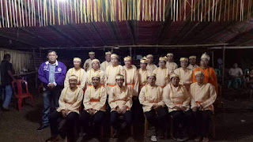
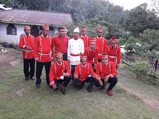
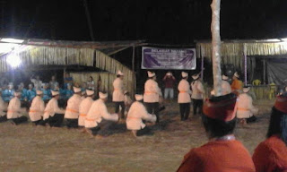

SENI & BUDAYA DESA BUDO
Desa Budo memiliki seni tari Masamper, Pato-pato & Musik Tradisional Gitar Mama, yang sering dipakai ketua ada penyambutan tamu, atau acara-acara dari Dinas. Masamper adalah kesenian tradisional masyarakat Noorder Einlanden dalam bahasa Belanda yang berarti pulau-pulau lebih utara atau populer disebut Nusa Utara, atau Sangihe, Talaut dan Sitaro. Masamper merupakan kegiatan bernyanyi bersama-sama secara berkelompok dan saling berbalas-balasan nyanyian. Kesenian Masamper merupakan grup seni bernyanyi yang memadukan dua unsur utama, yaitu vokal dan sentuhan gerakan yang harus seirama, disertai dengan gerak tari dari si pembawa lagu (pengaha). Dalam tradisi Masamper, tidaklah sekadar menyanyi bersama anggota. Bagian tengah lokasi masamper dibiarkan kosong, menjadi tempat bagi mereka yang mendapat giliran memimpin lagu. Pada hakekatnya Masamper merupakan media pengungkapan jiwa, mengekspresikan jati diri dan secara khusus memiliki nilai yang universal, religius, interaksi sosial, historis, cinta bangsa dan tanah air, pendidikan, dan identitas kultural. Sedangkan Pato-Pato memiliki pengertian yang hampir sama dengan Masamper, perbedaannya adalah Pato-Pato membentuk satu barisan panjang dan mendengarkan aba-aba dari Pangatasen (Dirigen) dan menari sambil bernyanyi. Desa Budo sering mengutus Group Masamper untuk mengikuti Lomba Masamper Tingkat Kabupaten dan sampai sekarang ini Desa Budo sering menjuarai lomba tersebut. Desa Budo memiliki 2 Group Masamper yang terdiri dari 15 - 20 orang, yaitu Group Kaum Bapa (Pria) dan Group Kaum Ibu (Wanita) dengan lagu-lagu dan tarian yang banyak dikuasai. Sedangkan Musik Tradisional Gitar Mama sering dipakai pada saat jamuan para tamu.
Berikut ini Dokumentasi 2 Group Masamper & Pato-Pato dari Desa Budo:



Desa Budo memiliki budaya yaitu Upacara Adat Tulude yang dilakukan setiap awal tahun baru, biasanya dilaksanakan bulan Januari atau Februari. Tulude atau sering juga disebut dengan Kunci Tahun, sudah menjadi budaya Desa Budo dari zaman Hukum Tua Pertama, yang sampai sekarang masih dilaksanakan. Dalam Upacara Adat Tulude, masyarakat bersama-sama mendoakan Desa untuk kedepannya lebih baik, agar terhindar dari bencana, menolak segala yang jahat yang ada di Desa tersebut. Upacara ini sangatlah sakral menurut kepercayaan, karena apabila salah memotong Kue Tamu atau Tumpeng akan ada masalah yang datang, dan ini sudah banyak terjadi di Desa-desa lainnya. Kue Tamu Adat Tulude ini harus dipotong secara adat, sebelum memotongnya harus berdoa untuk desa. Kue Tamu Adat ini biasanya dibuat segitiga panjang yang bahan bakunya adalah Nasi Kuning ataupun Waji (Beras Ketan, Gula merah, dan Rempah-rempah lainnya).
Students
Courses
Events
Trainers